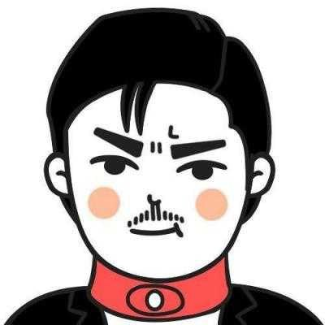
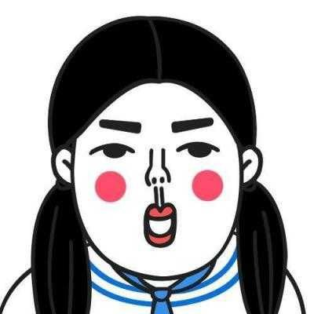

p元素
标题元素
span元素
我是凹文字
我是凸文字
rgba 取值 0~255
H 色调 取值范围0~360 0/360表示红色、120表示绿色、240表示蓝色
S 饱和度 取值范围0%~100%
L 亮度 取值范围0%~100%
A 透明度 取值范围0~1
text-shadow，可分别设置偏移量、模糊度、颜色（可设透明度）。
水平偏移量 正值向右 负值向左；
垂直偏移量 正值向下 负值向上；
模糊度是不能为负值；
阴影颜色。
CSS3中可以通过box-sizing来指定盒模型，即可指定为content-box、border-box，这样我们计算盒子大小的方式就发生了改变。
box-sizing: border-box盒子大小为 width
box-sizing: content-box盒子大小为 width + padding + border
注：上面的标注的width指的是CSS属性里设置的width: length，content的值是会自动调整的。


椭圆： /* 当盒子长宽不一致时，圆角属性 分别设置宽度的一半，以及长度的一半，即是椭圆 */
/* 或者直接 border-radius:50%; */
正圆： /* 当盒子长宽相等时，圆角属性分别设置宽度的一半，以及长度的一半，即是正圆 */
/* 或者直接 border-radius:50%; */
水平偏移量 正值向右 负值向左；
垂直偏移量 正值向下 负值向上；
模糊度是不能为负值；
inset可以设置内阴影；
注：设置边框阴影不会改变盒子的大小，即不会影响其兄弟元素的布局。可以设置多重边框阴影，实现更好的效果，增强立体感，符合渐进增强，实际开发中可以大胆使用。
可以设置长度单位(px)或百分比（设置百分比时，参照盒子的宽高）
设置为cover时，会自动调整缩放比例，保证图片始终填充满背景区域，如有溢出部分则会被隐藏。
设置为contain会自动调整缩放比例，保证图片始终完整显示在背景区域。
1.通过background-origin可以设置背景图片定位(background-position)的参照原点。
border-box以边框做为参考原点；
padding-box以内边距做为参考原点；
content-box以内容区做为参考点；
2.通过background-clip，可以设置对背景区域进行裁切，即改变背景区域的大小。
/* 属性 执行时间 延时时间 过渡类型*/
transition: all 2s 1s linear;
/*设置哪些属性要参加到动画效果中*/
transition-property: all;
transition-duration: 2s 设置动画过渡执行时间
transition-timing-function设置过渡速度类型
transition-timing-function:linear;
/* ease| ease-in | ease-out | ease-in-out | linear; */
transition-delay设置过渡延时
/*1s后，过渡动画开始过渡*/
transition-delay: 1s;
CSS3中，通过translate属性对元素进行位移。
移动translate(x, y)可以改变元素的位置，x、y可为负值；
a、移动位置相当于自身原来位置
b、y轴正方向朝下
c、除了可以像素值，也可以是百分比，相对于自身的宽度或高度
transform: translate(100px, 30px);
缩放scale(x, y)可以对元素进行水平和垂直方向的缩放，x、y的取值可为小数；
/*宽和高都放大1倍*/
transform: scale(1.5);
旋转rotate(deg)可以对元素进行旋转，正值为顺时针，负值为逆时针；
a、当元素旋转以后，坐标轴也跟着发生的转变
b、调整顺序可以解决，把旋转放到最后
/* 顺时针旋转 90度 */
transform: rotate(90deg);
倾斜skew(deg, deg)可以使元素按一定的角度进行倾斜，可为负值，第二个参数不写默认为0。
transform: skew(30deg,30deg);
透视可以将一个2D平面，在转换的过程当中，呈现3D效果。（没有perspective，便“没有”Z轴）并非任何情况下都需要透视效果。
给当前元素的直接父元素添加perspective: 800px;透视属性，注意这个值可以是随意的，但是最佳展现距离是600px~1000px。
什么是3D呈现呢？不要与前面的透视搞混，透视只能使一个物体呈现近大远小的状态，不能呈现出一个立体感的东西，比如我在页面上用六个面组成一个正方形，通过透视你可能只能改变他的远近距离，并不能让他看起来像个立体的盒子，所以这里需要用到另一个属性：transform-style。
transform-style: preserve-3d | flat
flat：所有子元素在2D平面呈现
preserve-3d：保留3D空间
必须设置在父元素身上并且父元素有转换（就是有变形）并且子元素也得有转换（变形）才能看得到效果。
必要点：
a、通过@keyframes指定动画序列；
b、通过百分比将动画序列分割成多个节点；
c、在各节点中分别定义各属性
d、通过animation将动画应用于相应元素；
动画关键属性
a、animation-name设置动画序列名称
b、animation-duration动画持续时间
c、animation-delay动画延时时间
d、animation-timing-function动画执行速度，linear、ease等
e、animation-play-state动画播放状态，running、paused等
f、animation-direction动画逆播，alternate等
g、animation-fill-mode动画执行完毕后状态，forwards、backwards等
h、animation-iteration-count动画执行次数，inifinate等
i、steps(60)表示动画分成60步完成